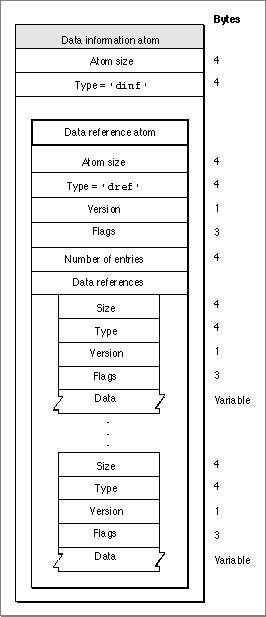

Data Information Atoms
The handler reference atom (described in "Handler Reference Atoms," which begins on page 4-13) contains information specifying the data handler component that provides access to the media data. See the chapter "Component Manager" in Inside Macintosh: More Macintosh Toolbox for more about components. The handler uses the data information atom, which you can use to specify where the media data is stored. Figure 4-21 shows the layout of the data information atom.Figure 4-21 The layout of a data information atom

You define a data information atom by specifying these elements:
- Size. A long integer that specifies the number of bytes in this data information atom.
- Type. A long integer that specifies the format (defined by the
'dinf'atom type) of the data in this data information atom.- Data references. The data reference atom, described in the next section, contains the data references.